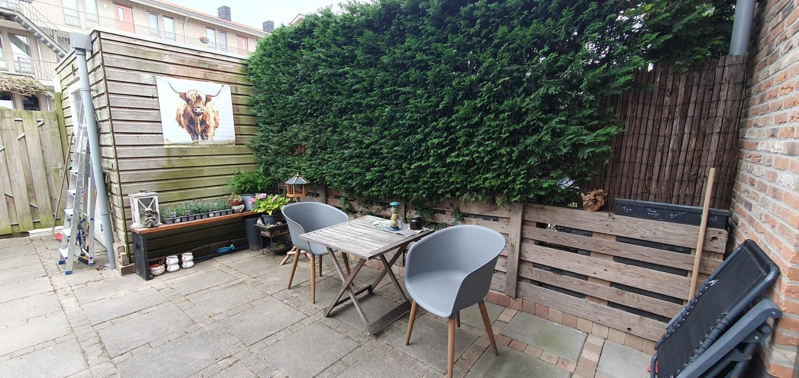
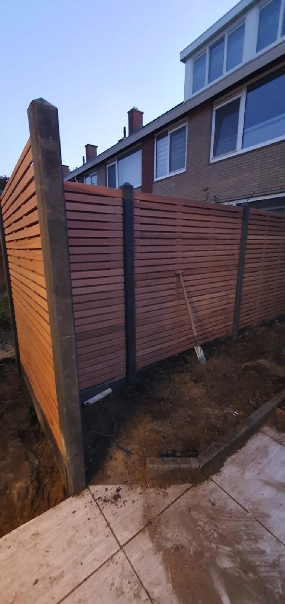

Hovenier voor Dordrecht & de Drechtsteden
Tuinen die rust uitstralen, tot in het kleinste detail.
Sealcleaning ontwerpt, legt aan en onderhoudt tuinen voor wie vakmanschap, een verzorgd resultaat en heldere afspraken belangrijk vindt.
- Gevestigd in Dordrecht
- Ervaren vakmensen
- Gratis bezichtiging in Dordrecht
- Heldere offerte vooraf

Diensten
Van een enkele beurt tot een volledig nieuwe tuin
Of het nu gaat om regelmatig onderhoud, een complete aanleg of het herstellen van een verwaarloosde tuin — wij denken mee, adviseren eerlijk en werken volgens een heldere aanpak, van eerste gesprek tot oplevering.
Bekijk onze werkwijzeUit de praktijk
Recent project: schutting en border in Dordrecht

Situatie
De achtertuin had een verouderde erfafscheiding en een border die opnieuw ingericht moest worden.
Aanpak
Oude erfafscheiding verwijderd, nieuwe schutting gesteld en verankerd, border uitgegraven en voorzien van verse tuinaarde en beplanting.
Resultaat
Een privacyafscheiding die de tuin direct een verzorgde uitstraling geeft, met ruimte voor de border om verder te groeien.
Ons werk
Recent werk uit Dordrecht en omgeving



Waarom Sealcleaning
Persoonlijk contact, vakwerk en duidelijke afspraken
- Een jong en gedreven hoveniersbedrijf uit Dordrecht, ondersteund door vakmensen met jarenlange praktijkervaring.
- Korte lijnen: u spreekt rechtstreeks met wie het werk uitvoert.
- Transparante materiaalkosten: u weet precies wat wordt aangeschaft en waarvoor u betaalt.
Werkwijze
Van eerste contact tot een nette oplevering
Aanvraag & bezichtiging
U vraagt een bezichtiging aan. In Dordrecht komen we gratis langs om de situatie te bekijken.
Advies & offerte
We bespreken de mogelijkheden, denken mee over materialen en stellen een heldere offerte op.
Uitvoering & oplevering
Na akkoord plannen we de werkzaamheden in en leveren we de tuin netjes en opgeruimd op.
Stel uw tuinproject samen
Wat wilt u laten doen?
Beantwoord een paar korte vragen over uw tuin. We nemen uw keuzes direct mee in het contactformulier, zodat u niet twee keer hetzelfde hoeft te vertellen.
Stap 1 van 4
Wat wilt u laten doen?
Stap 2 van 4
Hoe groot is de tuin ongeveer?
Stap 3 van 4
Waar en wanneer?
Gewenste uitvoerperiode
Stap 4 van 4
Uw aanvraag
In de volgende stap kunt u desgewenst foto's van uw tuin toevoegen. Op basis van uw invoer maken wij na beoordeling een passende offerte.

Voor wie het onderhoud liever uitbesteedt
Periodiek tuinonderhoud, afgestemd op uw tuin
Geen tijd of zin om zelf bij te houden? We stellen een onderhoudsritme voor dat past bij uw tuin — bijvoorbeeld eens per twee maanden of per seizoen. Denk aan snoeien, onkruid verwijderen, gazononderhoud en het opruimen van groenafval.
Ook voor verhuurders, VvE's en bedrijven verzorgen we vaste onderhoudsafspraken, met een maatwerkvoorstel op basis van de situatie.
Meer over periodiek onderhoudWerkgebied
Actief in Dordrecht, de Drechtsteden en Rotterdam e.o.
In Dordrecht bieden we een gratis bezichtiging. Werkt u verder weg, dan bespreken we eventuele voorrijkosten altijd vooraf — geen verrassingen achteraf.
- Dordrecht
- Zwijndrecht
- Papendrecht
- Sliedrecht
- Hendrik-Ido-Ambacht
- Alblasserdam
- Nieuw-Lekkerland
- Ridderkerk
- Barendrecht
- Rotterdam
Veelgestelde vragen
Wat klanten ons vaak vragen
Is een bezichtiging echt gratis?
In Dordrecht is de bezichtiging gratis en vrijblijvend. Werkt u buiten Dordrecht, dan bespreken we vooraf of er voorrijkosten gelden.
Wat kost tuinonderhoud?
Dat hangt af van de omvang van de tuin en de gewenste werkzaamheden. Na een bezichtiging ontvangt u een heldere offerte of indicatieve prijs.
Wie bestelt de materialen voor een project?
Wij adviseren over materialen, hoeveelheden en geschikte producten. Na uw akkoord bestelt en betaalt u de materialen zelf, zodat u precies weet wat u koopt en waarvoor.
Werken jullie ook buiten Dordrecht?
Ja, we zijn actief in de hele Drechtsteden en Rotterdam e.o. Bij grotere afstand bespreken we vooraf eventuele voorrijkosten.
Kan ik foto's van mijn tuin meesturen?
Ja, dat helpt ons om uw aanvraag sneller te beoordelen. Dit kan via het contactformulier, e-mail of WhatsApp.
Doen jullie ook periodiek onderhoud?
Ja, we stellen een onderhoudsritme voor dat past bij uw tuin, bijvoorbeeld eens per twee maanden of per seizoen.